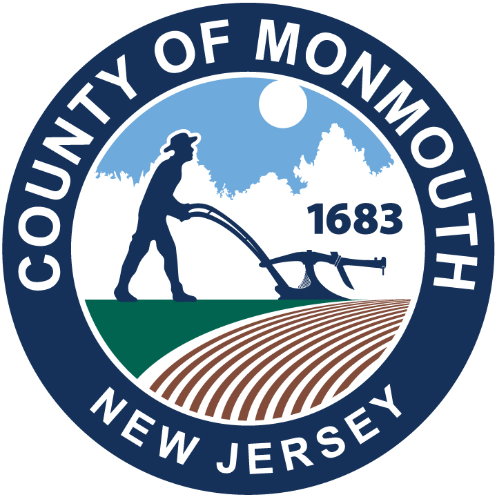
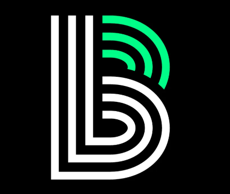
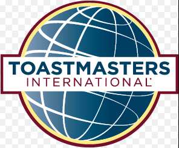

Schools
Assemblies, student confidence, leadership, and communication experiences.
Paul Ireifej is a New Jersey speaker and workshop facilitator who combines practical ideas, genuine connection, and the kind of energy that gets people participating—not just politely listening.
 Ideas with a pulse
Ideas with a pulseA representative selection of schools, libraries, public-sector teams, nonprofits, and organizations where Paul has delivered programs.

County of Monmouth
Big Brothers Big Sisters
Toastmasters District 83A fit for your room
Whether you are planning an assembly, professional-development day, community program, team event, or conference session, Paul meets people where they are and makes the material feel usable the next day.
Assemblies, student confidence, leadership, and communication experiences.
Community-friendly programs with ideas participants can take home.
Thoughtful sessions for public-sector teams and community audiences.
Programs that respect the mission, audience, and realities of the work.
Communication and technology workshops built for working teams.
Lively sessions that give people something worth discussing afterward.
Topics, tailored to people
Choose a proven program, then shape the conversation around your audience, goals, and available time.
Clear, grounded conversations about technology and the people using it.
Confidence, presence, listening, and messages that land.
Warm, active sessions that make communication more human.
Public speaking and leadership experiences designed for young people.
“I can't thank you enough. The keynote was outstanding. I am certain that everyone in the auditorium bought something from it.”Dr. Scott Cascone · Superintendent, Holmdel Township Public Schools
How booking works
Start with the event, the people in the room, and what you would love them to leave with. Paul will help identify a useful format and program direction.
Common questions
Paul specializes in AI and technology, public speaking, storytelling, improvisation, leadership, and youth education. Browse the workshop catalog for the current lineup.
Yes. This page is for organizations across New Jersey, including schools, libraries, municipalities, nonprofits, businesses, conferences, and community groups.
Yes. Share your audience, goals, and format when you reach out so the conversation can start in the right place.
Paul charges standard speaking fees and welcomes a direct pricing conversation. Charity and nonprofit programs may be offered free or at a discount.
Let’s make the room matter
That is plenty to start. Tell Paul what you are planning and who it is for. He will get back to you about fit, format, and next steps.
Prefer the site contact form? Contact Paul from the main site.